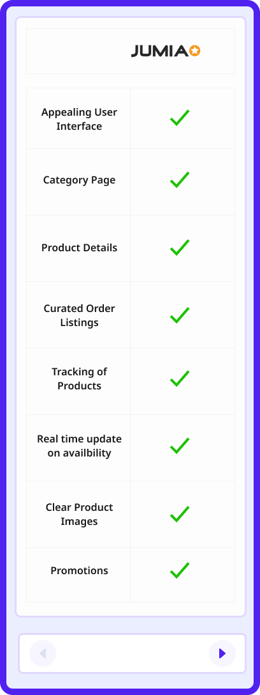
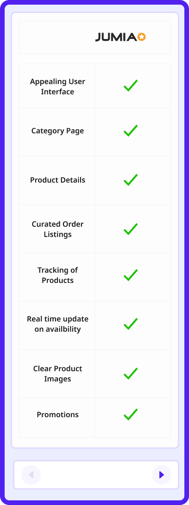

QUID MOBILE APP
Virtual Marketplace for buyers and sellers
My Role
Lead Product Designer
Industry
E-Commerce

Introduction
Quid is an e-commerce platform that offers a seamless shopping experience for both buyers and sellers. With easy-to-use features and a user-friendly interface, Quid makes it simple for buyers to find and purchase the products they need while providing sellers with tools to manage and promote their products. Quid is committed to providing a secure environment for all transactions, so you can shop with peace of mind.
My Role
As the Lead Product Designer on the team, I was responsible to oversee the entire process from conceptualisation, crafting effective design strategies to defining the visual direction of the products for both app and web experiences.


Design Process


Product Research & Discovery
In order to ensure i design with users on mind, it’s of an important part to understand how shopping experiences has evolved over time, and how we can make that an advantage to QUID without having to repeat processes overtime. For QUID, we are committed to building for two different users (Buyers and Sellers) , connected to just one single account, and this is why the product research has to come in place.
Working alongside the PM assigned to my team, The first approach was to highlights the most important core features that users are most likely to engage with on an e-commerce platform, that provides a smooth shopping experiences without glitches, and tools every sellers needs to list, and manage their products.
Buyers
These are users who are more concerned with purchasing items for personal or business purposes

Sellers
These are users who are more concerned with purchasing items for personal or business purposes
DISCOVERY INSIGHTS
Every user (buyer) has on mind to shop and buy items online, with the same feel or experiences compared to physically shop from a supermarket or mart, while every seller also needs the right tool to list and “manage” their products and orders with the same experiences compared to physically selling their products in an office space, without glitches. Here is my summarised summary;
Category pages are very important and plays a huge and vital role on every e-commerce platform as this helps aids users to easily find or navigate the products they need.
Secure environment and process for payments/transactions, with support enabled incase of disputes and payment errors
Proper description of products and clear images of listed products to provide more clarity for buyers to help aid their impressions and thoughts on a product.
Tracking of orders from both parties (Buyers and Sellers), to streamline fulfilment processes, and identifying issues that occurs during shipping and delivery
Orders for both parties (buyers and Sellers) should easily be curated for easy follow through without mixups, to scale up efficiency and speed.
Seamless cart and checkout experiences to streamline and simplifies products purchasing for users, which in turn increases sales and smoothen customer experiences, reducing the chances of cart abandonment
Painpoints gathered
I put together an understanding of the different pain points of the users gathered, from different participants the team spoke to. Although, some of the participants made the same points, of which i had to put together as one
Aesthetics
- Unappealing user interfaces/experiences
Availaibility
- Absence of real time updates of new products/items on the app
- Absence of real time update of products/item availaibility
Accessibility
- Unclear images that aids users/customers understandings of products
- Sanity checks that preve
Competitive Audit
To further validate the research frameworks, with the team, it was essential to understand the strengths and weaknesses of our competitors, and use this as a leverage for QIID Commerce for better experiences, and to get a clearly perspectives of the users we build for.
 

Product Goals
Building products that solves varieties of user needs, most especially for a shopping experiences that shapes the buying and selling experiences of users through the implementation of core features, will continually encourage users to continue use such products - Goal of every products
To make shopping experiences simple and seamless for buyers to find and purchase the products they need while providing sellers with tools to manage and promote their products. Qiid is also committed to providing a secure environment for all transactions, to build competency, trust and seamless experiences for every users
User Goals
-

Good User interface designed with users on mind
-
Improved methods of shopping. purchasing and listings of
Products
-
Security, Trust and Safety
-
Security and Safety
Business Goals
-
Increased users conversations across products
-
High Revenue/Income through multiple channels (Promotions/Ads)
-
Churn and Bounce rate reductions
-
Increased user sign up (Referrals and Feedbacks Channel)
Information Architecture
An end to end representation/workflow of the information architecture showing the walkthrough of one phase to other other

Designs
An end to end representation/workflow of the information architecture showing the walkthrough of one phase to other other
Onboardings
The onboarding helps users understand what can be done on the app and help inform the users about the app functions, benefits and features expectations. For QUID, images were added to aid the content navigation for users while onboarding them.


Registration & Sign In
At these points, users are prompted to enter their personal information, set up business profile, and security password to safeguard their account. Email Verification is done by sending a verification link to user email address.


In App Navigations
Navigations helps to direct the steps of users and help them make choices easily without taking much time. For QIID, personalising user experiences to tailor their expectations was top focus, for ease and better experiences.


Product Purchasing for buyers
Product details page is a critical part of an E-commerce
experience. To help with users decision, key informations and
quality options for products were added to fast track users
shopping experiences.
Also, Key informations that speaks distinctly to the product
were added to give users more clarity and helps in their
decision making when wanting to purchase an item. These
includes, Product Features, Delivery and returns Info, Feedbacks
and Ratings, and Seller Information.


Curated Orders
To help users keep track of their orders as an inventory, categorising the listings was the approach. This way, users will conveniently find their orders putting the status on mind as well


CArt, Checkout and Payments
Currently for this version, payment is being handled by external payment gateway, and not QUID


Tracking of orders
Users are always curious to know how far or how soon their orders can get to them. To help give users more clarity and also aid the UX of these product, it is important that a status update was made available, and users can get to see the status/progress (Real time update) of the orders.


Withdrawals and transactions
For every seller who comes to list on QUID, withdrawing their money off should be done conveniently. For every new seller/user, they are first prompted to enter the withdrawing bank info and security key, as a security feature to secure their money from scammers gaining access to their account.
Updating their wallet info


After updating


Promotions
Designing for business is an important and essential factor to be considered. Promotions is an important tool for sellers (Designing for users) to help market their products to a much more volume of audiences so their products can get more visibility. The promotions package on QUID has different plans which in turn, suits different users according to their preferences.


Feedbacks
It is essential to learn more into the experiences of users who uses QUID for further improvements on the products. So i designed the feedbacks channel, as an overlay that pops up automatically on the screen for users to easily share their experiences without much clicks.


If you read to this point,
QUID is live and available on all stores.
.png)
.png)